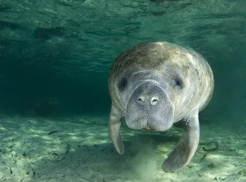
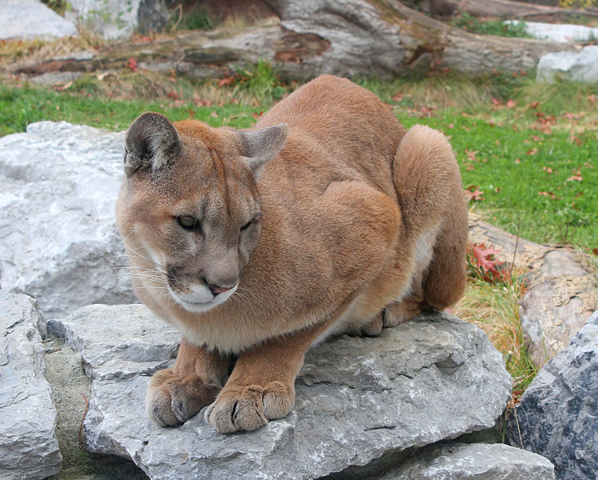
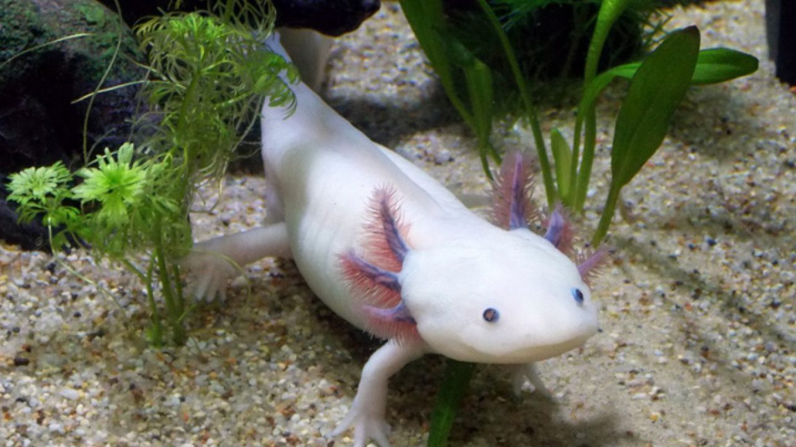
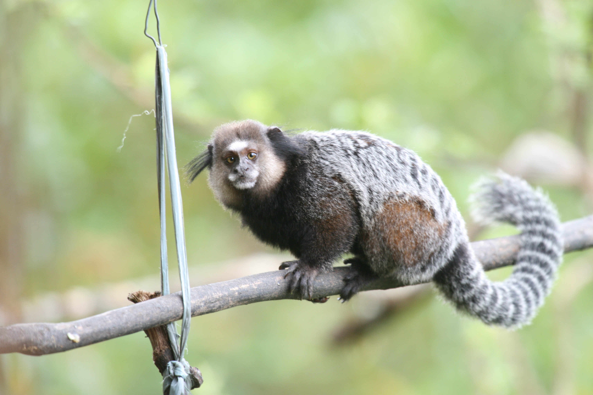
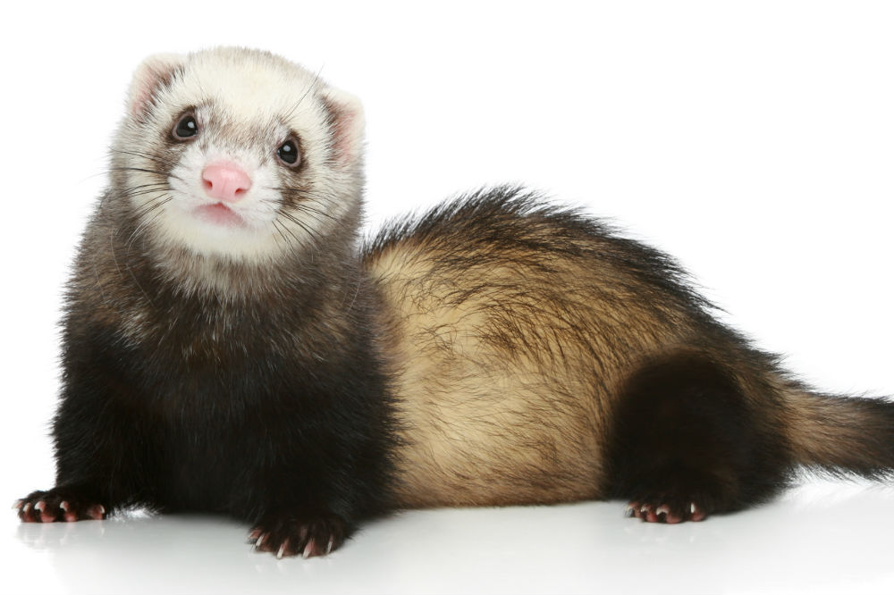

Estes são os animais mais legais de todo o planeta
Top 5 animais legais
Top 5 Peixe boi

Os peixes-bois, vacas-marinhas, manatins ou lamantins, constituem uma designação comum aos mamíferos aquáticos, sirênios, como os dugongos, mas da família dos triquequídeos
Top 4 Puma

Também conhecido como onça-parda, suçuarana ou leão-baio, a espécie é nativa da América, sendo o segundo maior felino dessa região.
Top 3 Axalote

Axolotl é uma salamandra pedomórfica que atinge a idade adulta sem sofrer metamorfose.
Top 2 Sagui

Calitriquídeos é uma família de Macacos do Novo Mundo, e já foi considerada subfamília da família Cebidae. Popularmente, são conhecidos por sagui.
Top 1 Furão

O furão é um mamífero carnívoro da família dos Mustelídeos.